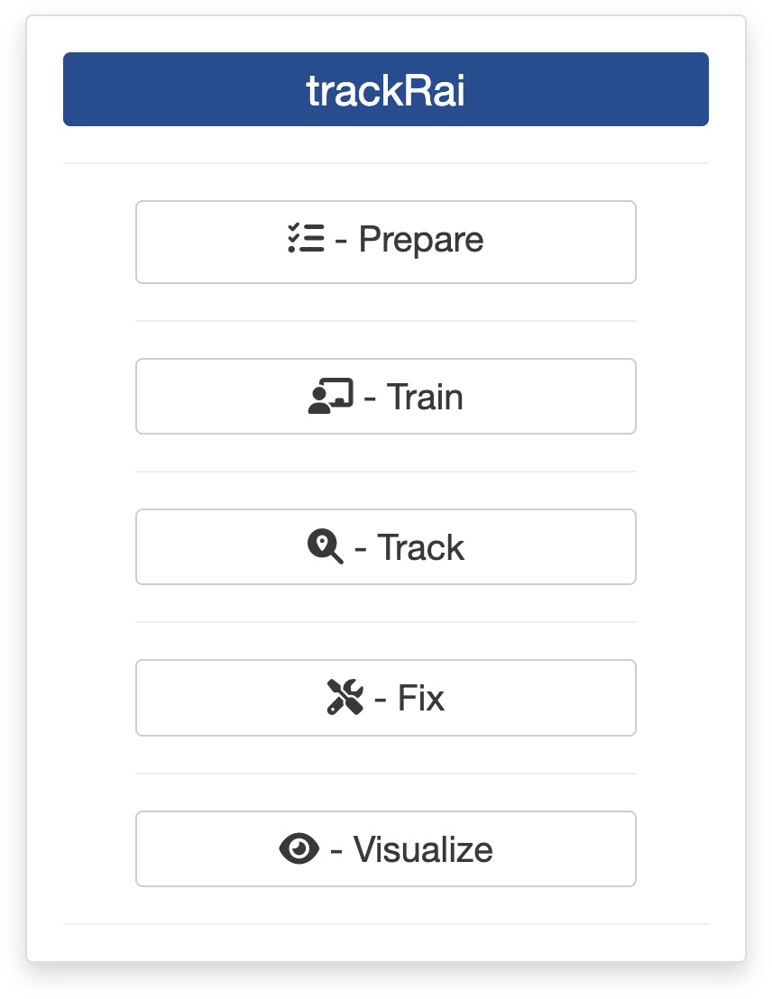
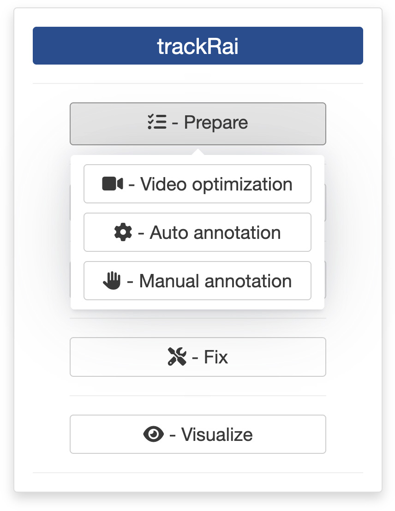
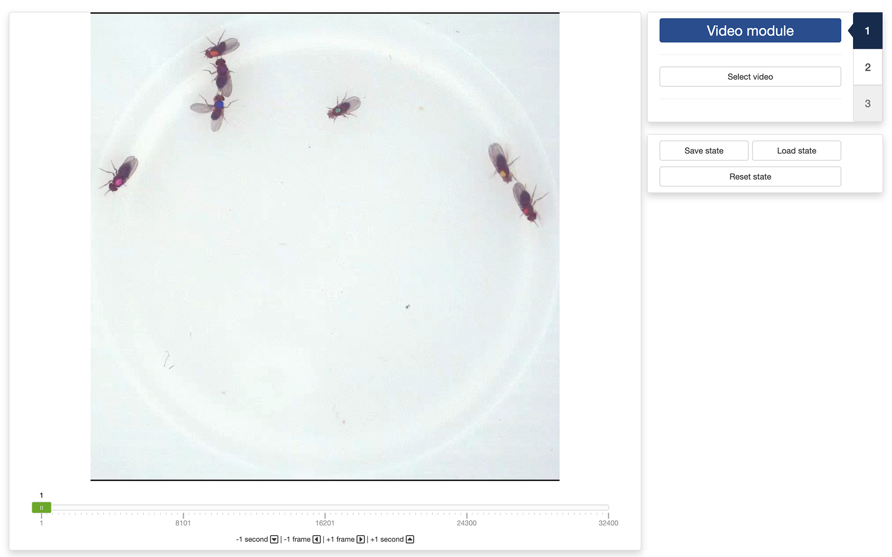
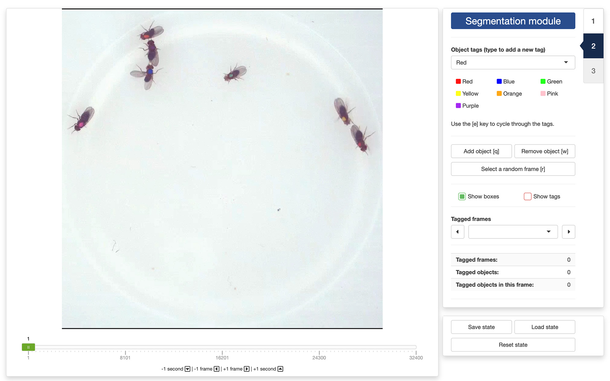
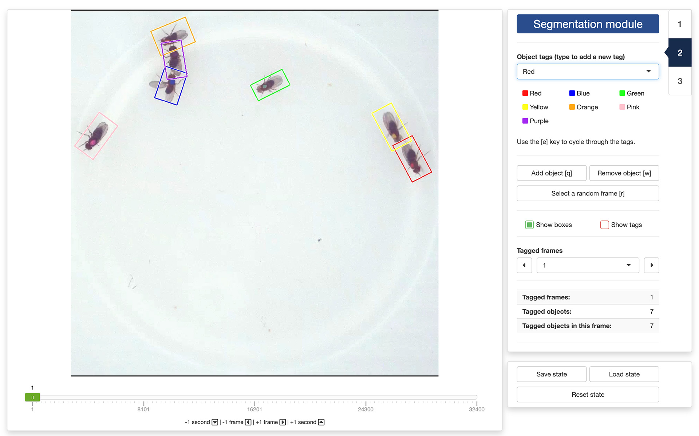
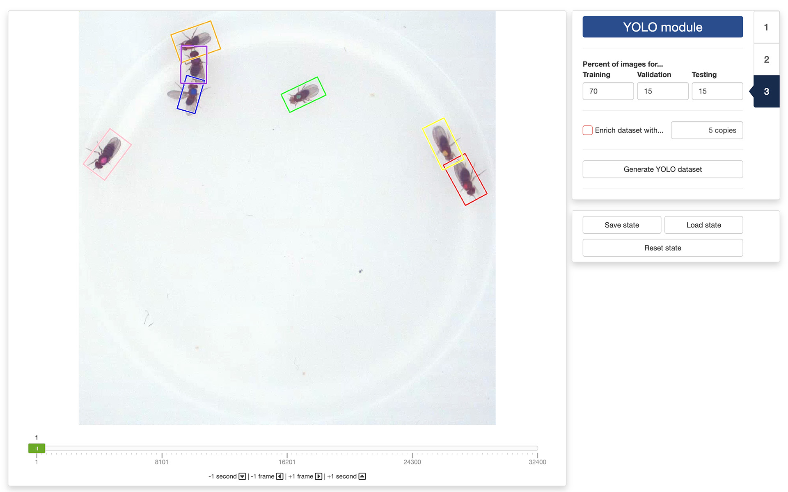

0. Introduction
Once you are ready to prepare a training dataset, you can launch trackRai by typing the following command in the R console:

This will open the app launcher either in the viewer pane of RStudio and Positron, or in a separate window, depending on your local configuration. In RStudio at least, you can control where the app opens by setting the launch.browser option. For instance:
trackRai(launch.browser = shiny::paneViewer())will launch the app in the RStudio viewer pane.
Once the launcher is running, click on the “Prepare” button, and then on the “Manual annotation” one to launch the data preparation app. The launcher will close and the app will start shortly after. This app will help you generate a dataset that you can then use to train a YOLO model. The app provides an interface to quickly annotate video frames by hand, instead of using the automated method discussed here. While less convenient, it has the advantage of working with more complicated scenarios, for instance if you want to track different classes of objects separately, or when the scene is complex and/or variable (e.g., camera movement, changing background, unstable light conditions, etc).
1. Video module
The first step of the preparation process is to load a video file into the app. To do this, simply click the “Select video” button. This will bring up a navigator that you will use to locate the video file that you would like to process. Once you have located the video file in the navigator, click the “Select” button. The app will open the video and display its first image in the display window (see below).

You can navigate through the video by sliding the green tab along the timeline displayed below the video. You can also use the arrow keys on your keyboard to navigate through the video: the left and right arrows allow you to navigate frame by frame; the up and down arrows allow you to navigate one second at a time.
Once the app has opened the video, you can move to the “Segmentation module” by clicking on the tab marked “2” on the right side of the control panel.
2. Segmentation module
Segmentation is the process of isolating objects of interests from the background of an image. In order to do so, the app will need help from you. First, you’ll need to create tags for each class of object you want to track. In the drop-down menu below “Object tags (type to add a new tag)”, you can add new class of objects by simply typing the name you would like to use for that class. You can add as many classes as you want, but you need to specify at least one class to proceed. If you have specified several classes, you can cycle through them using the [e] key on your keyboard.

Once you have created all your object tags, you can start annotating frames of your video. These frames will be used later to train a YOLO model to recognize the objects and their classes in the video (or in similar videos). Ideally, you want to annotate as many frames as possible, but good results can be achieved by annotating as few as 50 frames. Very important: all objects of interest in a frame must be annotated! If you do not annotate all the objects, YOLO might learn to ignore them, which is the opposite of what we are trying to achieve.
To annotate an object in a frame, click on the “Add object [q]” button, or press the [q] key on your keyboard. This will bring up a cross-hair cursor that you can use to select two points at the extreme ends of the long axis of an object (e.g., just in front of the head and just behind the tail of an animal). The app will use this information to create an oriented bounding box around the object. If you are not satisfied the result, you can click on the “Remove object [w]” button, or press the [w] key on your keyboard. Click then inside the bounding box of the object you want to remove.

Once all the objects in the are annotated, you can navigate to another using the navigation controls as described in the previous section. Ideally, you want to annotate frames that represent a variety of situations, so it is recommended to spread out the frames you select. You can also click on the “Select a random frame [r]” button, or press the [r] key on your keyboard. This will pick a frame at random from your video while ensuring that they are spread out across the video (i.e., portions of the video that are not covered well are more likely to be selected each time).
To facilitate the annotation process in crowded condition, it is possible to show/hide the bounding boxes and the tags using the tick boxes called “Show boxes” and “Show tags”.
All annotated frames can be accessed from the “Tagged frames” drop-down menu. This will allow you to quickly navigate to any frame that contains annotated objects, for example, to review your or someone else’s work. Statistics about the number of annotated frames, tagged objects, and tagged objects in the current frame can be found below that.
Finally, and importantly, you can save your work in progress by clicking on the “Save state” button at the bottom of the control panel. This will save the current state of the app, and you can load it back at a later time by clicking on the “Load state” button. This is especially useful if you cannot complete the annotation in one session, or if you want to return to your work later and add more annotations (e.g., if the result of the training process is not satisfying).
3. YOLO module
The final step of the process is to generate the training dataset itself. First, you need to set the number of images that will be used for training, validating, and testing the YOLO model that you will train in a separate app. A recommended breakdown–but not a strict rule–is to reserve 70% of the images for training, and 15% for validating and testing, respectively.

You can also decide to enrich the training dataset by adding copies the annotated frames to which random noise, luminosity, and contrast changes have been applied. This will increase the diversity of the training dataset and can improve the generalizability of the model. This is by no means a mandatory step, but you can play with it to see if it improves the results.
When you are ready, you can generate the training dataset by clicking on the “Generate YOLO dataset” button. This will bring up a file manager and you can select the location where you would like the dataset to be saved (a folder named “YOLO” will be created at that location). Once the process terminates, you are done and you can close the app. The next step will be training a YOLO model using the dataset you just created.
The video used throughout this tutorial was provided by Gal, A., Saragosti, J., & Kronauer, D. J. (2020). anTraX, a software package for high-throughput video tracking of color-tagged insects. eLife, 9. https://doi.org/10.7554/eLife.58145, and is used here under the terms of the Creative Commons Attribution 4.0 International License.